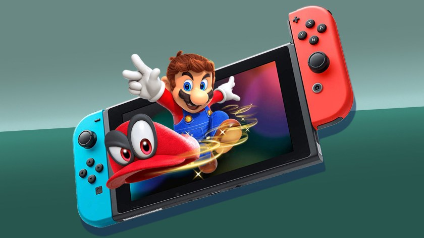

Muchas veces se ha rumoreado que Apple está por lanzar una consola de videojuegos, pero nunca llega el día en que realmente lo hace.
Ahora llega un nuevo e interesante reporte, donde se afirma que la compañía estaría trabajando en una consola portátil híbrida, como la Nintendo Switch.
El reporte viene desde Wccfech, citando a una comunidad coreana del sitio web Clien. De acuerdo con lo compartido, Apple estaría buscando hacer una consola con capacidades similares a la Nintendo Switch, pero además brindando una fuerte potencia en ella.
Además, su consola llegaría con un fuerte sistema de enfriamiento, con lo que
notaríamos una gran diferencia con los productos actuales de la compañía, como el iphone
y la ipad.
También se dice que llegaría con un procesador diferente a las series A y M.
Para terminar, se añade que la compañía de la manzana está negociando con desarrolladores grandes como Ubisfot para que traigan sus exclusivas a Apple Arcade. Así que También podemos ver que hay planes de integrar Apple Arcade con su futura consola.
Dado que ya han añadido muchas las veces que se habla de una suspuesta consola de videojuegos por parte de Apple, será mejor que no te tomes tan enserio este nuevo rumor.
¿Crees que esta vez sea de verdad la consola de Apple?